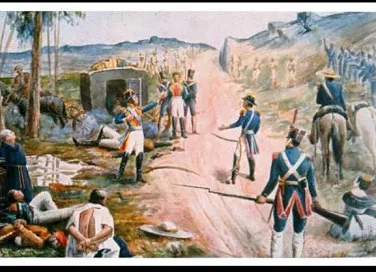

LA BATALLA DE PUENTE CALDERONEn el momento en que comenzó la Batalla del Puente de Calderón, las fuerzas insurgentes ya estaban colocadas frente al ejército realista. Los hombres de Hidalgo ocupaban una amplia extensión del terreno, formando una línea muy grande debido a su enorme número. Desde el inicio, los insurgentes comenzaron a avanzar con fuerza, intentando envolver a los realistas. Sus gritos y movimientos generaban presión, ya que superaban ampliamente en cantidad al enemigo. Los realistas, al ver esto, se prepararon defensivamente. Durante esos primeros instantes, parecía que la fuerza insurgente era suficiente para inclinar la batalla a su favor. Había tensión, ruido de armas y movimiento constante en el campo. El combate comenzó con intercambio de disparos y cargas. La situación era intensa desde el principio. Todo indicaba un enfrentamiento decisivo. Mientras avanzaba la batalla, los insurgentes lograron acercarse más a las posiciones realistas. Muchos de ellos luchaban con armas improvisadas, pero confiaban en su número. Comenzaron a presionar los flancos del ejército de Calleja, obligando a sus tropas a resistir bajo presión. En algunos puntos, los realistas parecían ceder terreno. Esto provocó entusiasmo entre los insurgentes. Las filas se movían constantemente y había enfrentamientos cuerpo a cuerpo. La confusión ya era parte del combate, pero aún había control general. Hidalgo y otros líderes observaban el desarrollo con la esperanza de victoria. Parecía que podían ganar si mantenían el avance. El impulso inicial estaba de su lado. Sin embargo, la batalla aún no estaba decidida. |
 |
|
|---|---|---|
Los realistas, aunque presionados, mantuvieron la disciplina. Sus unidades no se desorganizaron, y sus oficiales daban órdenes constantes. Calleja observaba cuidadosamente, buscando el momento adecuado para responder. La artillería realista seguía disparando contra las masas insurgentes. Cada disparo causaba daños y trataba de frenar el avance enemigo. Aunque eran menos, los realistas actuaban de forma coordinada. Se replegaban en orden cuando era necesario y volvían a posicionarse. La diferencia en entrenamiento empezaba a notarse. Aun así, la presión insurgente continuaba. El combate se mantenía intenso en todos los frentes. Ninguno de los dos bandos cedía completamente. En medio de ese combate, ocurrió el momento más importante de toda la batalla. Un disparo de cañón del ejército realista impactó directamente en el área donde los insurgentes guardaban su pólvora y municiones. Este lugar era clave para sostener el combate. Al recibir el impacto, se produjo una explosión muy grande. El fuego se extendió rápidamente entre los materiales inflamables. El ruido fue ensordecedor y generó un fuerte impacto en todos los presentes. El humo cubrió parte del campo de batalla. Muchos insurgentes no entendían qué había pasado. Fue un momento repentino y devastador. Este suceso cambió todo.
Tras la explosión, el ejército insurgente comenzó a perder el control. El fuego, el humo y el ruido provocaron miedo entre las tropas. Muchos pensaron que había ocurrido una traición o que la situación estaba perdida. Las órdenes dejaron de seguirse. Las filas se rompieron rápidamente. Algunos intentaban huir, otros se movían sin dirección clara. El desorden creció en cuestión de minutos. Los líderes no lograban reorganizar a sus hombres. La estructura ya era débil y terminó colapsando. El caos dominaba completamente el lado insurgente. La batalla empezó a inclinarse en ese instante. Los realistas notaron inmediatamente el desorden del enemigo. Calleja comprendió que era el momento clave para atacar. Dio la orden de avanzar contra las fuerzas insurgentes. Sus tropas se movieron con disciplina, en formación y aprovechando la confusión contraria. Comenzaron a empujar a los insurgentes que ya estaban desorganizados. El ataque fue directo y efectivo. Al no haber resistencia coordinada, lograron avanzar con rapidez. Los insurgentes no podían defenderse adecuadamente. La diferencia entre ambos ejércitos se volvió evidente. La situación se volvió cada vez más desfavorable para Hidalgo. El destino de la batalla estaba prácticamente decidido.
Mientras los realistas avanzaban, muchos insurgentes comenzaron a huir del campo. Dejaban atrás armas, suministros y posiciones. No existía una retirada organizada. Era una huida generalizada provocada por el miedo. Algunos intentaban reagruparse, pero era inútil. La presión realista era constante. El campo se llenó de confusión, gritos y movimiento descontrolado. Las fuerzas insurgentes ya no podían responder como un solo ejército. La derrota se hacía evidente. La batalla se convirtió en una persecución más que en un combate equilibrado. Todo sucedió en poco tiempo. La caída fue rápida. Los líderes insurgentes, al ver el desastre, intentaron escapar. Hidalgo, Allende y otros comprendieron que no podían continuar la lucha en ese momento. Decidieron retirarse para evitar ser capturados. Sin embargo, esta retirada fue desordenada también. Ya no había control sobre la tropa. Cada grupo se dispersaba por su cuenta. Esto debilitó aún más la posibilidad de continuar la batalla. El mando prácticamente se perdió. El ejército insurgente dejó de existir como fuerza organizada. Lo que quedaba eran grupos dispersos huyendo. La derrota era total. El campo quedó en manos de los realistas.
El ejército realista consolidó su victoria asegurando la zona. Controlaron el puente y el terreno cercano. Recolectaron armas abandonadas por los insurgentes. Confirmaron que el enemigo había sido completamente derrotado. Calleja logró transformar una situación difícil en un triunfo gracias a la disciplina de sus tropas. El campo de batalla quedó lleno de evidencia del enfrentamiento. La victoria realista fue clara y definitiva en ese momento. No hubo recuperación insurgente dentro del combate. Todo había terminado. El control del lugar quedó asegurado. Fue un momento clave de la guerra. En ese instante final, la batalla del Puente de Calderón había concluido con una derrota total para los insurgentes. Lo que comenzó como una ventaja numérica terminó en desastre por un evento inesperado y la falta de organización. El momento de la explosión marcó el cambio total del combate. Desde ese punto, todo fue caída para el ejército de Hidalgo. La disciplina realista y el caos insurgente definieron el resultado. El campo quedó en silencio después del conflicto. La batalla terminó, pero sus consecuencias apenas comenzaban. Fue un momento decisivo en la historia. Todo cambió ahí mismo.